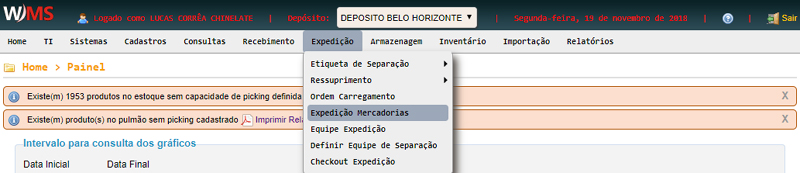
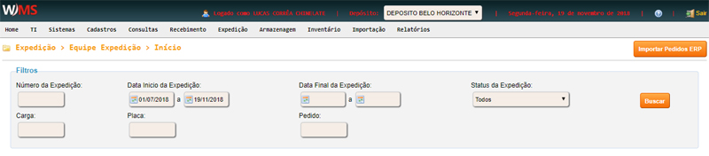
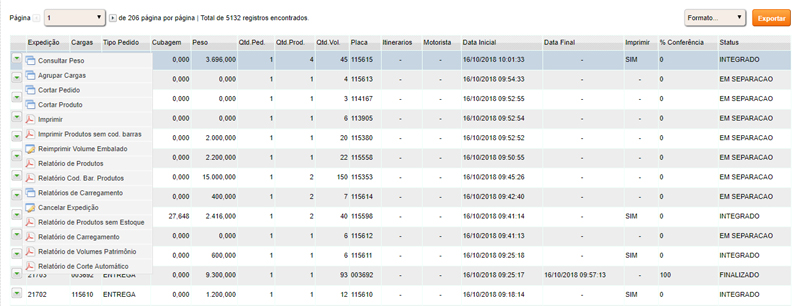

Expedição -> Expedição mercadorias
Clique no menu EXPEDIÇÃO, em seguida clique em EXPEDIÇÃO MERCADORIAS.

Na tela seguinte, preencha os campos de filtro e clique em BUSCAR.

Conforme figura abaixo, é possível realizar diversas ações sobre as expedições.

- Consultar peso: Desagrupa as cargas
- Agrupar carga: Efetua o agrupamento de cargas
- Cortar pedido: Realiza o corte de forma manual
- Imprimir: Realiza a impressão dos mapas de separação
- Reimprimir Volume Embalado: Imprime consolidado
- Relatório de produtos: Emite relatório de produtos desta expedição
- Relatório Cod. Bar. Produtos: Emite relatório de código de barra dos
produtos desta expedição
- Relatórios de Carregamento: Espelho de carregamento utilizado para
conferência de carregamento
- Cancelar Expedição: Efetua o cancelamento da expedição
- Relatório de Produtos sem Estoque: Relatório em que consta os produtos
que não possuem estoque disponível (PDF)
- Relatório de Carregamento: Relatório do carregamento em PDF.